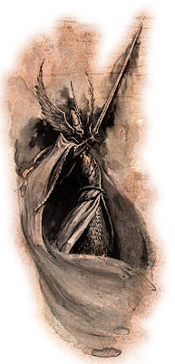

Forums galactiques > Taverne galactique : lieu de discussion informel > Nouvelle coalition...
Pages : 1
| Teclis Réputation à la taverne : 0  20/05 ETU 13:23 | Score : 0 Détails Ceci est un simple message, vous n'êtes pas obligés d'y répondre, en tant que commandant ayant l'expérience de deux galaxies, je viens de créer une coalition, l'Ordre élémentaires. Nous cherchons de jeunes commandants, voulant entrer dans une coalition, que vous soyez guildéens, fédérés ou alliantistes, vous êtes les bienvenues, aussi, veuillez me contacter par x-com afin d'avoir plus amples informations.
En espérant être répondu. | ||
| Dark Ezeckiel Réputation à la taverne : 776  20/05 ETU 13:47 | Score : 2 Détails Il me semble difficile de croire votre argumentation,étant donné le fait que la technologie permettant le voyage intergalactique n'a pas encore été découverte...
Et même si,par miracle,c'était en effet le cas,il faudrait plusieurs milliards d'années pour effectuer un tel voyage tellement la technologie précédemment citée serait peu évoluée. Par ailleurs,au vu des études théoriques menées par d'éminents scientifiques,il serait impossible de faire escale lors d'un déplacement de cette catégorie,et le simple fait de pouvoir rassembler suffisamment de vivres et de rafraîchissement,ainsi que de trouver un vaisseau à la fois suffisamment grand pour les contenir et également résister à la vitesse-lumière avec une taille pareille relève tout simplement du domaine de l'impossible... |
Pages : 1
Forums galactiques > Taverne galactique : lieu de discussion informel > Nouvelle coalition...